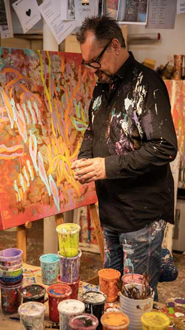

Forside
Værker
Om
Projekter
Kontakt
Forside
Værker
Om
Projekter
Kontakt
Per Hillo - kærlighedskunsteren
Jeg maler for at gøre folk glade og påvirke
mennesker med kærlighed og omsorg

Idag er galleriet åbnet til kl 18:00.
Næste event hvor Per Hillo deltager
Mød Per
Det sker